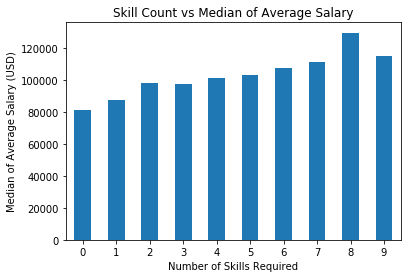

Analysis of Skills & Education
This page focuses on how certain technical skills combined with education level influence compensation rates. While the value of specific skills is highly dependent on the individual role, it's possible there are some skills that are generally more valuable in data science. This tab is intended to help you figure out which skills you should be investing in the most. See the visualizations below!
Common Data Science Skills
Below for some of the most common data science skills and their descriptions. This list is by no means exhaustive or complete.
| Skill | Description |
|---|---|
| Python | Python is an interpreted, object-oriented, high-level programming language with dynamic semantics |
| Spark | Apache Spark is an open-source, distributed data processing framework designed for big data analytics and machine learning. |
| AWS | Amazon Web Services (AWS) is a comprehensive cloud computing platform that provides a wide range of cloud-based services for businesses and developers. |
| Excel | Microsoft Excel is a spreadsheet application used for data analysis, calculation, and visualization, with a wide range of business and personal applications. |
| SQL | Structured Query Language (SQL) is a domain-specific language used for managing and querying relational databases. |
| SAS | SAS (Statistical Analysis System) is a software suite used for advanced analytics, business intelligence, and data management. |
| Keras | This is an open-source deep learning framework that provides an easy and high-level interface for designing and training neural networks. |
| PyTorch | This is an open-source deep learning framework known for its flexibility and dynamic computation graph, widely used in research and machine learning applications. |
| Scikit-learn | This is a popular machine-learning library in Python that provides tools for data mining and data analysis. |
| TensorFlow | TensorFlow is an open-source machine learning framework developed by Google, widely used for building and training deep learning models. |
| Hadoop | This is an open-source framework used for distributed storage and processing of large datasets, especially in big data applications. |
| Tableau | This is a data visualization tool that allows users to create interactive and shareable dashboards and reports from various data sources. |
| BI | Business Intelligence (BI) refers to technologies, processes, and tools for collecting, analyzing, and presenting data to support decision-making in business. |
| Apache Flink | This is an open-source stream processing framework designed for real-time data processing and analytics. |
| MonboDB | This is a NoSQL database management system that stores data in flexible, JSON-like documents and is widely used for scalable and high-performance applications. |
Do more skills = more money?
This figure shows as the number of skills required increases, the median average data scientist salary increases as well.
What combination of skills will yield the greatest increase in salary?
The analysis of median average salaries for various skill combinations based on degree level provides valuable insights into the job market's demand for specific expertise. Overall, the choice of skills and the corresponding degree level can significantly influence salary expectations in the dynamic job market, and a keen understanding of these dynamics can help individuals make informed career decisions and achieve their salary goals.